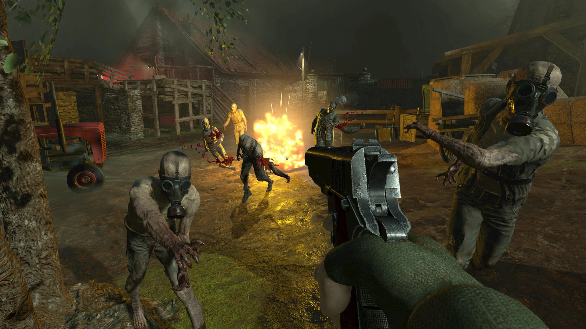
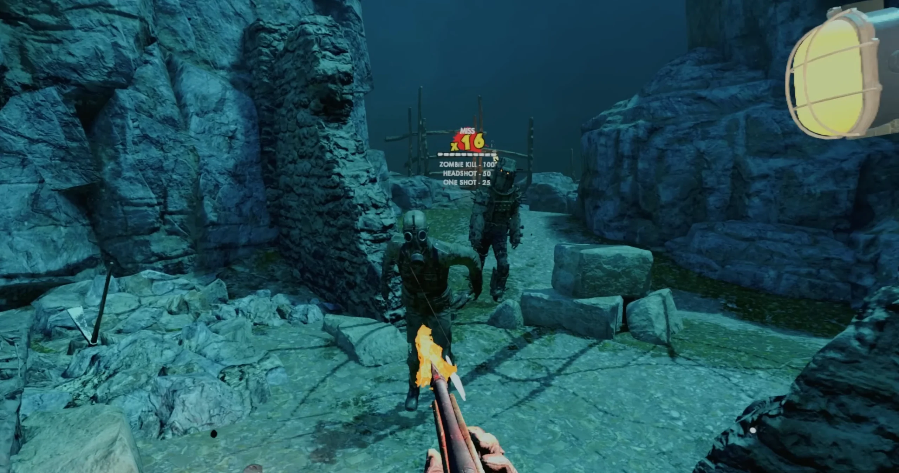

Shipped commercial project · XR Games / Rebellion
Zombie Army VR
Unity games programming across gameplay architecture, reusable platform packages, connected systems and VR delivery.

Shipped game
Official game screenshots
Screenshots from the official Steam listing.

Gameplay architecture

Scoring service
Extensible scoring
I authored the core score service for multikills and other scoring modifiers, using extensible, independent modules.


Platform integration
Reusable packages
I independently authored the save package for Zombieland: Headshot Fever Reloaded, then extended it to support Steam and Oculus with further Sony features. I also independently authored a reusable social integration package for those platforms.
I worked on multiplayer features, backend setup, leaderboards and friend invites.
Loading and performance
Loading and profiling
I worked on asynchronous scene loading to reduce hitching and keep loading animations smooth. Profiling identified CPU and memory bottlenecks within tight VR frame budgets.
Release and support
Submission and support
I worked on platform compliance, release submission and post-release support. I also investigated and fixed bugs across gameplay systems, including weapons, during development and after release.
More work